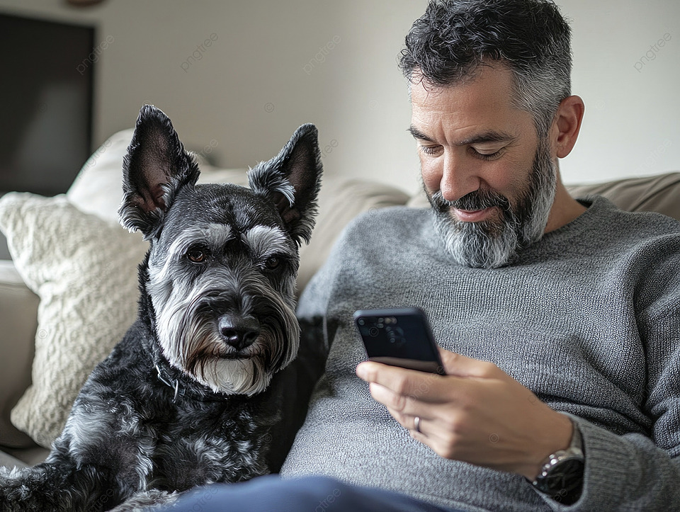
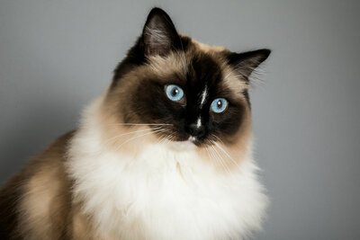
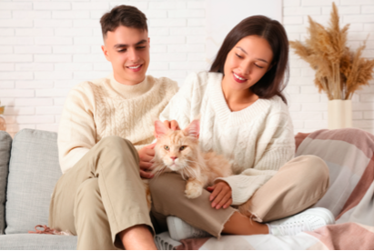

Juan Camilo Perez
"Mucha gente busca cachorros, pero yo decidi darle una oportunidad a un perro adulto. Toby es la
calma de mi casa, es super agradecido y educado. ¡Gracias Patitas Felices!"
⭐⭐⭐⭐⭐




"Mucha gente busca cachorros, pero yo decidi darle una oportunidad a un perro adulto. Toby es la
calma de mi casa, es super agradecido y educado. ¡Gracias Patitas Felices!"
⭐⭐⭐⭐⭐

"Adoptar a Simba fue la mejor decision. El proceso fue super claro y el equipo de la fundacion me dio
todos los tips para que se adaptara rapido a mi apartamento. ¡Ahora somos inseparables!"
⭐⭐⭐⭐

"Buscabamos una gatita que fuera paciente con nuestros hijos y Luna fue el 'match' perfecto. Ver a
los niños aprender sobre responsabilidad y amor animal no tiene precio."
⭐⭐⭐⭐⭐